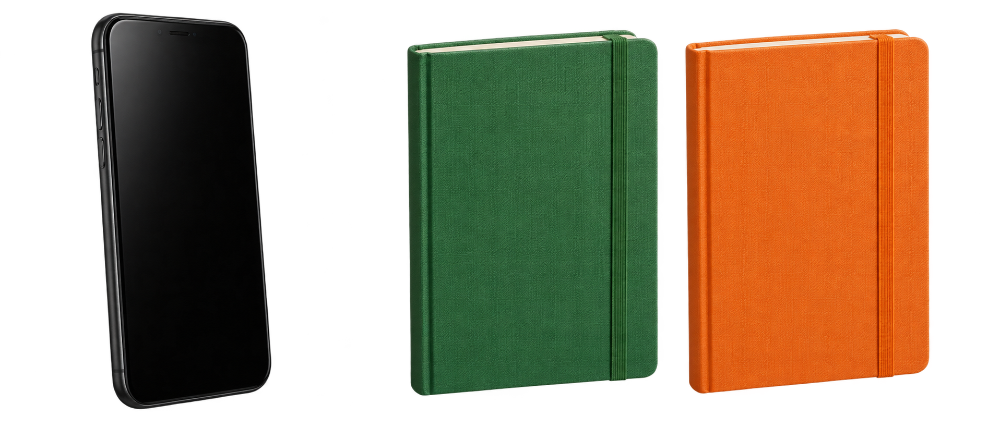

Grammar practice · Unit 2
Near, far and already known
Point to it2A

near me
This is my phone.
These are my notebooks.
far from me
That is my phone.
Those are my notebooks.
One this / that → is
Two or more these / those → are
A Choose and circle. Use the distance clues.
- Your bag is next to you: this / that bag.
- Two keys are next to you: these / those keys.
- A notebook is across the room: this / that notebook.
- Two phones are across the room: these / those phones.
B Complete the messages with this is, that is, these are or those are.
- Near me, one phone: my phone.
- Far from me, two bags: your bags.
- Near me, two keys: my keys.
One item, then the same item2B
First mention
I have a bag.
I have an umbrella.
We know which one
The bag is red.
The umbrella is black.
C Complete with a, an or the.
I have notebook and umbrella. notebook is blue. umbrella is black.
D Find and correct the two mistakes.
I have an phone. A phone is in my bag.